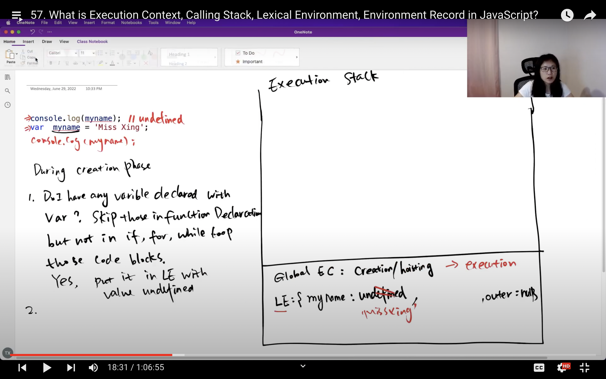
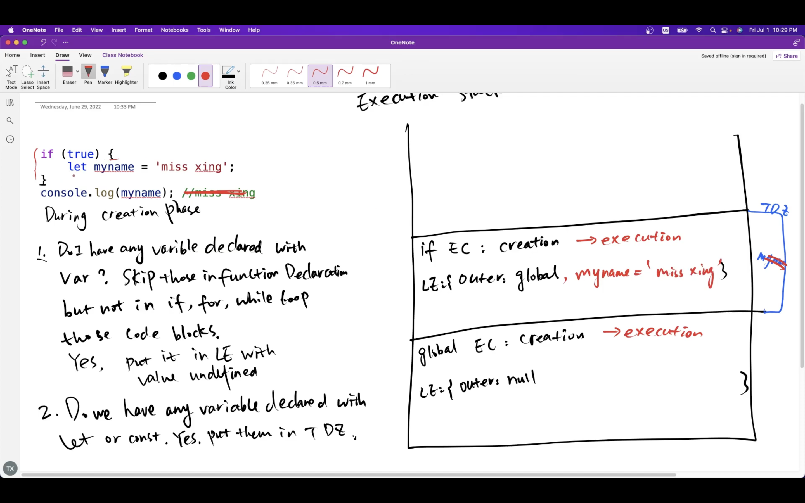

Learning From Miss Xing YouTube channel. JS Execution Context
1. An Execution Context is created when javascript code is executed.
2. All Execution Context are pushed into Execution Context Stack.
* Also known as Calling stack, is a stack with LIFO structure.
* Used to store all Exection Context created during code execution.
* JS engine execute the function whose executioin context is at the top of the stack.
When this function is completed, its execution context is popped off from the stack,
and the control reaches to context below in it current stack.
var
1. Do I have any variable declared with "var"? skip those in function declaration but not in if, for, while code block. If "Yes" Put it in Lexical Environment with value undefined.

console.log(myname); // undefined
var myname = 'Sushil';
console.log(myname); // Sushil
let
1. Do I have any variable declared with "let/const"? If Yes put them in Temporal Dead Zone.
console.log(myname); // Uncaught ReferenceError: Cannot access 'myname' before initialization
let myname = 'Sushil';
Code Block for var
Code Block(if, for, while) won't create scope for "var" variable except for "function"
console.log(myname); // undefined
if(true) {
var myname = 'Sushil';
}
console.log(myname); // Sushil
Code Block for let
Code Block will create its own Execution stack and "let" variable scope remains within this stack only.
console.log(myname); // Uncaught ReferenceError: myname is not defined if(true) { let myname = 'Sushil'; }if(true) { let myname = 'Sushil'; } console.log(myname); // Uncaught ReferenceError: myname is not defined
function
var
function foo(arg) {
console.log(myname); // undefined
if (arg) {
var myname = "Sushil";
}
console.log(myname); // Sushil
}
foo(1);
console.log(myname); // Uncaught ReferenceError: myname is not defined
let
function foo(arg) {
console.log(myname); // Uncaught ReferenceError: myname is not defined
if (arg) {
let myname = "Sushil";
console.log(myname); // Sushil
}
console.log(myname); // Uncaught ReferenceError: myname is not defined
myname is not found in this EC, so it will be looked in global EC if not found
error is thrown
}
foo(1);
console.log(myname); // Uncaught ReferenceError: myname is not defined
foo(); // hello
function foo() {
console.log("hello")
}
foo(); // Uncaught TypeError: foo is not a function
var foo = function () {
console.log("hello")
}
Note: function foo is defined with "var", so at the time of creation phase in Excecution Context, its value is undefined.
And at the time of execution phase, code is read line by line and foo method is called which is undefined hence throws error.
foo(); // Uncaught ReferenceError: Cannot access 'foo' before initialization
let foo = function () {
console.log("hello")
}
Note: function defined with "let" or "const" will be placed in Temporal dead zone (TDZ).
And at the time of execution phase, code is read line by line and foo property is not found in Lexical Environment hence throws ReferenceError.